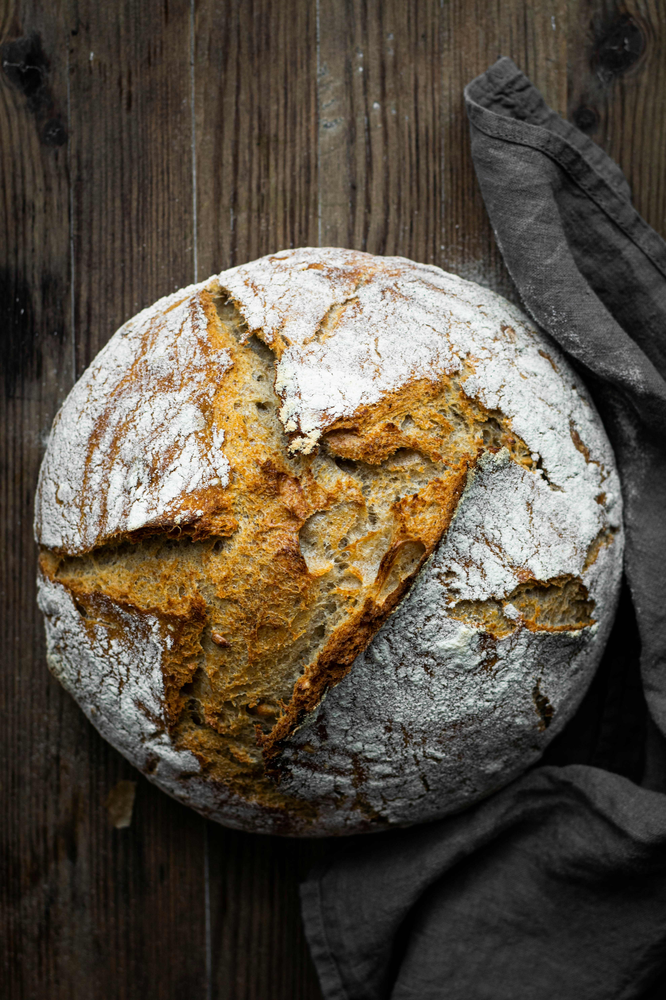

Bread

Description
The inviting smell of fresh baked bread brings people together and evokes feelings of warmth and comfort. This recipe makes a perfect loaf with a crispy golden-brown crust, a soft, chewy crumb, and a well-developed flavor.
This easy-to-make loaf pairs well with any meal, and can even be sliced for sandwiches. My favorite way to enjoy this bread is sliced, with butter, while it is still warm from the oven.
Ingredients
- 3 C bread flour
- 1 1/2 C warm water
- 1/4 tsp instant yeast
- 1 tsp salt
- 5 qt cast iron dutch oven
Steps
- Mix dry ingredients. Combine the flour, yeast, and salt in a large mixing bowl and stir well.
- Add water. Add the water to the dry ingredients until is it a wet, doughy blob. It does not need to be kneaded or mixed well. Just stir it all together until it is combined.
- Rest the dough. Cover the bowl with your dough and let it rest 12 - 24 hours. As the yeast works its way through the dough, it will "micro-knead" it for you. It will be ready when the dough has doubled in size and is bubbly around the edges.
- Shape the dough. Dump out the dough onto a floured surface. Fold it over a couple of times with well-floured hands. The dough will be wet and sticky at this point. Place the blob of dough on a piece of parchment paper, put into a small, narrow bowl, and let rest for two hours.
- Preheat. When you have about 30 minutes left, put the cast iron dutch oven in your oven and preheat the oven to 450°F.
- Bake. Carefully remove the dutch oven and dump the dough into the center of it. Recover the dutch oven and reinsert it into your oven. Bake for 40 minutes. Uncover the bread and bake for an additional 15 minutes until the crust is golden brown. Cool on a cooling rack.
- Enjoy. Grab a bread knife and the butter and indulge!